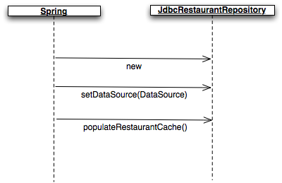
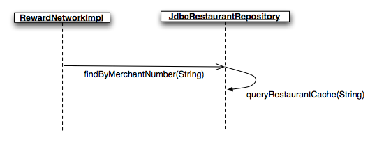
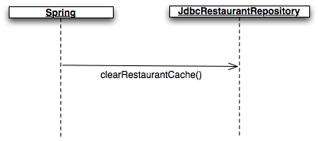
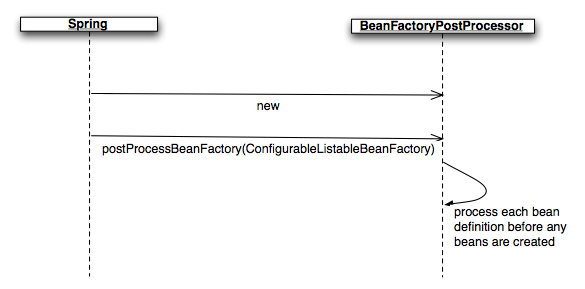
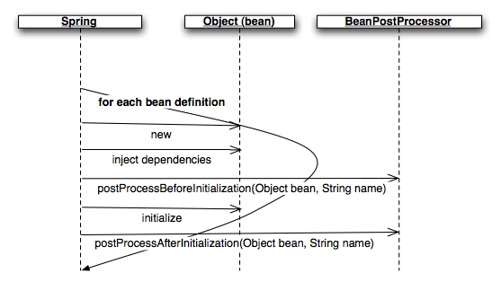

In this lab you will gain experience with the lifecycle features of Spring's bean container in the context of the rewards application.
What you will learn:
How to implement your own bean lifecycle behaviors
How to modify Spring bean definitions at runtime, and when that is useful
How to apply custom configuration behaviors to objects created by Spring
Specific subjects you will gain experience with:
@PostConstruct / @PreDestroy / <context:annotation-config>
BeanFactoryPostProcessor / PropertyPlaceholderConfigurer / <context:property-placeholder>
BeanPostProcessor / RequiredAnnotationBeanPostProcessor
Estimated time to complete: 45 minutes
Since Spring manages the lifecycle of your application, it is well-placed to issue your callbacks at various points within that lifecycle. In this section, you'll implement your own lifecycle behaviors for a component (bean) of your application.
In the reward dining domain, restaurant data is read often but rarely changes.
This makes that data a good candidate for caching. In this section you will enhance
JdbcRestaurantRepository to cache Restaurant objects to
improve performance. You'll leverage Spring to control cache initialization and destruction, and you'll
run tests to verify your behavior.
Here are the design requirements you should follow:
When your JdbcRestaurantRepository is initialized it should eagerly
populate its cache by loading all restaurants from its
DataSource.
Each time your repository is used it should query from its cache.
When your repository is destroyed it should clear its cache to release memory.
The desired 'initialization' sequence is shown graphically below:
|  |
Figure 1: A JdbcRestaurantRepository being initialized
The desired 'use' sequence is shown below:
|  |
Figure 2: A RewardNetworkImpl calling a
JdbcRestaurantRepository to load Restaurants
The desired 'destruction' sequence is shown below:
|  |
Figure 3: A JdbcRestaurantRepository being destroyed
With the design outlined, you are ready to implement.
Take a look in your container-2-start project in the Eclipse IDE. Navigate
from the src/main/java source folder into the
rewards.internal.restaurant package. Within that package you'll find
JdbcRestaurantRepository. Open it.
You'll see two TODOs indicating tasks to be completed. To complete these,
enhance your JdbcRestaurantRepository so it will:
Receive an initialization callback when deployed as a Spring bean. Upon initialization,
the populateRestaurantCache method should be called to populate
the cache.
Query its cache by calling queryRestaurantCache(String) when
asked to find a Restaurant.
Receive a destruction callback when deployed as a Spring bean. Upon destruction, the
clearRestaurantCache method should be called to clear the cache.
When you've completed your enhancements, move on to the next step!
Now it is time to verify your enhancements work. In this step, you will unit test your
JdbcRestaurantRepository in isolation. The unit test won't use Spring, but
will simulate the Spring bean lifecycle to initialize and destroy your repository.
In the src/test/java source folder, navigate to the
rewards.internal.restaurant package. There you will find the unit test class
JdbcRestaurantRepositoryTests. Before you go any further, run the test as-is
to see what happens. You'll see the red bar indicating 3 failures, along with an explanation of why
each test failed.
Now open the test class. First, you'll focus on properly testing initialization behavior. In
setUp you'll see a JdbcRestaurantRepository
being initialized like it would if deployed as a Spring bean. The default constructor is being
called and the DataSource is being set (injected). There is also a
TODO asking you to issue the initialization callback as Spring would do. Do this
and re-run your test. You should still see red, but the failures should be different.
If you implemented your repository initialization and use logic correctly, you'll see that 2 of the
3 tests cases pass now, leaving 1 failure. The first tests a successful find, and the second tests a
find with a bogus merchant number. Together they verify your cache was initialized and queried
successfully. If you see more than 1 failure, head back to your
JdbcRestaurantRepository implementation to debug. Run the test again when you
think you have fixed the problem.
So 2 of your 3 tests are passing, but 1 is still failing: the test that verifies the cache is
cleared when your repository is destroyed. In tearDown you'll see a
TODO asking you to issue the destruction callback as Spring would do. Do this.
Then, inspect the restaurantCacheClearedAfterDestroy test and see how it forces
an eager tearDown, then verifies the cache is cleared. Re-run your test. If you implemented your
repository destroy logic correctly, you should see all green.
When you see the green bar you have proof your JdbcRestaurantRepository
works in isolation. Move on to the next step!
You have verified your JdbcRestaurantRepository works in isolation. However,
you haven't verified that everything else continues to work when your repository is integrated and
used in your application. Specifically:
You don't know yet if Spring will properly initialize and destroy your repository. So far you've only simulated the bean lifecycle, you actually haven't tested it with Spring.
You don't know yet if your repository causes something else in the application to fail.
In this step, you will re-run your existing RewardNetworkTests to verify your
application, configured by Spring, still works with your repository enhancements.
Find RewardNetworkTests within the root rewards
package in src/test/java. Open it and run it as is. You should see a red bar
indicating a test failure. The test fails because Spring has not yet been configured to respect the
initialization and destruction annotations added in Step 1. Open
application-config.xml in the src/main/java in the rewards.internal
and add the configuration element that enables processing these annotations.
![[Tip]](images/tip.png) | Tip |
|---|---|
The |
| Tip |
|---|---|
It's a best practice to put the directive enabling the processing of these annotations in a
configuration file not specific to a deployment environment. Regardless of the environment,
we always want annotation processing to happen. This is why we are putting the directive in the
|
Once you've updated the configuration XML accordingly, re-run the test - you should have the green bar.
Your test seems to run fine, let us now have a closer look. Open JdbcRestaurantRepository and add a breakpoint to the @PreDestroy annotated method. Re-run RewardNetworkTests in debug mode. As you can see, this method is not called.
In the Spring lifecycle, when is any method annotated with @PreDestroy supposed to be called? What is missing in your test?
Make the appropriate changes inside RewardNetworkTests.tearDown(). You can run the test in debug mode one more time. The @PreDestroy annotated method should now be called.
When this is done, you've completed this section! Your repository is being successfully integrated into your application, and Spring is correctly issuing the lifecycle callbacks to populate and clear your cache. Good job!
Spring has several extension points that allow you to add custom behavior at well-defined points within the bean container lifecycle. In this section you will learn about one of these extension points called the bean factory post processor. You'll then gain experience with a concrete implementation provided by the Spring Framework.
A BeanFactoryPostProcessor is a special bean that can modify the
definitions of other beans before they are used to create objects. How does this work? Well, Spring
issues each BeanFactoryPostProcessor a callback before any other bean is
created. Each can then change the definition of any other bean in the factory. This process is shown
graphically in Figure 5:
|  |
Figure 5: The bean factory post processor
Bean factory post processors are useful when you want to apply changes or transformations to groups of
bean definitions at runtime. A good example would be to replace bean property value placeholders with
values from .properties files to allow administrators to easily tweak configuration
parameters. In this section, you'll do exactly that with the
<context:property-placeholder> element.
In the following steps you'll gain experience with using the <context:property-placeholder>,
element. This element uses PropertyPlaceholderConfigurer, a concrete
BeanFactoryPostProcessor implementation. Specifically, you
will move the configuration of your TestDataSourceFactory from
test-infrastructure-config.xml into a .properties file, then
declare a <context:property-placeholder> element to apply the configuration. By doing this,
you'll make it easier for administrators to safely change your configuration.
In this step you'll create a properties file that externalizes the configuration of your
dataSource factory bean.
Within the rewards.testdb package inside src/test/java
create a file named testdb.properties. Add the following properties:
schemaLocation=classpath:rewards/testdb/schema.sql testDataLocation=classpath:rewards/testdb/test-data.sql
Notice how these values match the current script values of the embedded dataSource
in test-infrastructure-config.xml. Once you've verified this, move on to the
next step!
In this step you will replace the static property values in your
test-infrastructure-config.xml with placeholders.
In test-infrastructure-config.xml, replace each property value configured for
your dataSource factory bean with a placeholder. The placeholder name should
match the respective property name in your properties file.
Once you have done this, run your RewardNetworkTests to see if anything
broke. You should see the red bar indicating the placeholders are not yet being replaced with valid
values. One more step left to complete...
In this step you will declare a <context:property-placeholder> element that will
replace each placeholder with a value from your properties file.
In test-infrastructure-config.xml, declare an instance of the
<context:property-placeholder> element. Set its location attribute
to point to your properties file. Remember that this configuration will be automatically detected by
Spring and called before any other bean is created. No other configuration is necessary.
Now re-run your RewardNetworkTests. You should see the green bar indicating
your placeholders are being replaced with valid values.
| Tip |
|---|---|
Even if you get green on your first attempt, try experimenting with some failure scenarios. For example, try misspelling a placeholder, property name, or property value and see what happens. |
When you have the green bar, congratulations, you have completed this section and are ready for the next one!
Another extension point provided by Spring is the bean post processor. In this section you will learn when it is useful, and will gain experience with a concrete implementation provided by the Spring Framework.
A BeanPostProcessor is a special bean that can modify other beans
after they are created by Spring. This is different than a
BeanFactoryPostProcessor, which can modify
bean definitions before any objects are created.
How do they work? Spring issues each BeanPostProcessor two callbacks for
every bean it creates as part of the bean initialization lifecycle. Each bean post processor can then
manipulate each bean instance as it sees fit. A bean post processor can even return a different object
back to the factory to use in place of the object created by Spring. Figures 6 shows this process
graphically:
|  |
Figure 6: The bean post processor within the bean initialization lifecycle
Bean post processors are useful when you need to apply custom configuration behaviors to groups of bean
instances. Often, post processors key off annotation metadata present on a bean's class to determine
what behaviors to apply. A good example would be to perform a dependency check on a bean properties
whose setter methods are marked @Required to enforce they have been set. In this
section, you will do exactly that with the RequiredAnnotationBeanPostProcessor, a
concrete BeanPostProcessor implementation.
In the rewards application there are several required properties. Recall that each JDBC-based repository
needs a DataSource to do its work. Currently, this data source is injected using
setter dependency injection. But what if you forget to call the setter? No error would be detected until
the repository was used. In the following steps you'll use a
RequiredAnnotationBeanPostProcessor to verify
at configuration time all required properties are set properly.
In this step you will break your application by removing the instruction to set the
DataSource for each repository.
Before you do anything, first run your RewardNetworkTests to verify your
application still works. Now break it temporarily by opening
application-config.xml and commenting out the property tag
that sets the dataSource for each repository. Re-run your
RewardNetworkTests and get the red bar as you would expect. But note how the
error was not caught until the application was used and the description of what went wrong isn't
informative. You can do better!
In this step you'll add a @Required annotation to each required dataSource
property.
Open each JDBC-based repository class and add a @Required annotation to the
dataSource setter method. Re-run your RewardNetworkTests.
You'll get the red bar, but notice how the error is now much more descriptive and was caught earlier. Much better!
![[Note]](images/note.png) | But what about configuring a |
|---|---|
Notice that we did not explicitly define a |
Nobody likes the red-bar, so put back your property tag to set the
dataSource and re-run your test. You should get the green bar, but now if it
breaks again you'll catch the bug earlier with a better error message thanks to the
RequiredAnnotationBeanPostProcessor.
Now re-run your RewardNetworkTests. If you get all green, congratulations!
You've completed this lab!